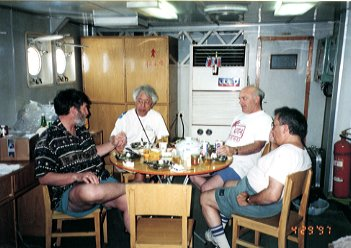
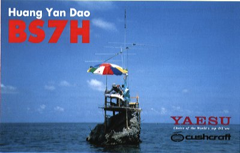

【広州出発からスカボロー・リーフ到着まで】4月28日：09:00（現地時間）、予定通り海艦72が離岸。 続いてメンバーの乗る海艦74も、大勢の見送りを受け出港。 出港間もなく全員が参加して緊急非難訓練が行われる。 いよいよ茶色の珠江から南シナ海に向かう。出港3時間後の12：00時頃（同）からBS7H/MMの運用を開始。 珠江の河口は香港、マカオに近いため、 6mで香港（VR2/VS6）が呼んできてくれる。 BS7H/MMで香港13局とこの日QSO出来た。 HFでは米国勢が14MHzのCWで北米、ヨーロッパをさばいている。 デッキに設置したバーチカルにしては、 良く聞こえている。 さすがはMMだ、と感心する。外洋に出た途端、6mの香港も聞こえなくなった。 船の一室を“無線室”として提供してくれたが、ここは15×5ｍ程の部屋で、普段はトレーニング用の教室と して使われているらしい。 壁の回り2面はデスクが置かれ、たくさんのACコンセントが壁にセットされていて、 無線室には最適。
 4月29日：07:00にGPSで位置を測定したところ、ちょうど中間地点（N=19.4 E=115）を航行中らしい。 昨夜はかなりスピードを上げていた様なので、この分ではスカボロー・リーフには予定より早く到着しそう。中国のメンバーの中には、昨夜船酔いした者も居たようだが、米国と日本のメンバーは、全員元気にビールで “水分の補給”に忙しい？。 4月30日：朝05:00頃起きると、船は停止している。 まだ外は薄暗く、デッキの最上階に上がり周囲を見回してみると、 伴走してきた海艦72のランプが後方に見える。振り返ると前方にも小さな灯かりが見える。 ビデオの望遠で覗いて見ると、横長の“島”の様なものが見える。 その回りに、数隻の漁船らしい影が動いている。 灯かりはこの漁船のものらしい。 海は穏やかで、船の揺れはほとんど感じられない。 空が徐々に明るくなるにしたがい、“島”に見えたの は、座礁した船と判明（写真参照）。 「これがあの“座礁船”か！」と、言う事は･･･、此処がまぎれもなく、われわれが目指してきた、 スカボロー・リーフそのものなのだ。 しかし何度目を凝らして見ても、陸地らしいものは何処にも確認出来ない。 明るくなるのを待って、ボートでロック探しに出掛ける事に決まる。 ロックを発見したら設営、運用開始と 本日からいよいよ、BS7H DX-Peditionの“本番”が始まるのだ。  1997 BS7H index  BS7H 1997 Home Page BS7H 1997 Home Page |